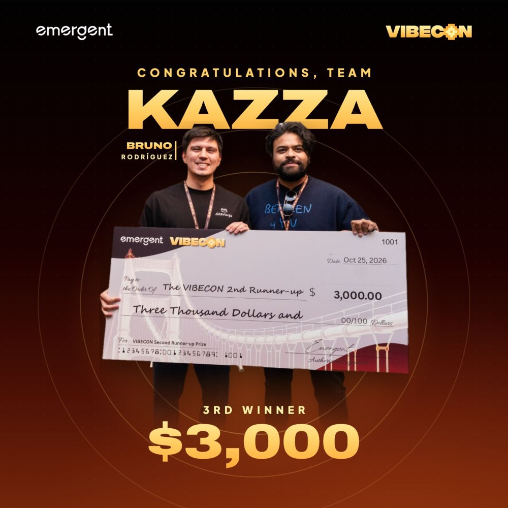

The hackathon
VibeCon SF was put on by Emergent, a platform for building software with agents. More than 2,000 people applied and 175 of us got in. The theme was Build for Main Street: build products for real small-business problems in health, logistics, finance, real estate or education.
I heard about it the way I hear about almost every hackathon: emails from the YC ecosystem. Only when I read the details did I realize everything had to be built inside Emergent, which I had never used.
It ran more than 24 hours, from 10 in the morning one day to noon the next, with a night in between. The vibe was great: I met a Colombian, two Peruvians and a group of women from El Salvador. Running into more Latinos in tech is always the best part of these events.
The idea: what can be built, and where
At work I deal with building regulation in the United States: I analyze what can be built in each zone. And I've noticed that answering that question matters in a lot of industries: construction, architecture, permitting, regulation.
I picked construction on purpose: it's a topic few people care about and few teams were going after. Architects have told me about the problem I wanted to tackle more than once. They draw the plans, send them to city hall and wait. They don't design knowing upfront what the regulation says: they design, and then city hall tells them "hey, take another look at this." Each of those small reviews takes time, and added up they can be months.
Kazza does two things: it creates floor plans and automatically checks them against the California building code. If the plan already follows the rules before it reaches city hall, you skip a lot of that back and forth. And in construction, time is money.
The name sounds like "casa", Spanish for house. I spelled it with a K and two Zs because they're letters made only of straight lines, like a floor plan.
Why I went solo
I didn't form a team for two reasons. First, I already had a very defined idea, something I had thought about way too much. Second, in Emergent each project moves forward in a single conversation thread with the agent, so there wasn't much room to collaborate.
Two days preparing, three prompts building
I started thinking about what to build a week before, but the real work was the two days before the event, when I sat down to write the prompts. I spent hours talking with AI, including Claude Code, to review and organize my ideas until every feature was clear. It was product engineering more than programming.
The result was a five or six page prompt with the platform's vision, the feature list and user stories. Since I already know the California building code well, choosing the 39 rules was the easy part.
During the hackathon, building took three prompts:
- The initial platform, from the full document.
- Extending the features on top of that.
- Refining whatever was still rough.
Most things worked on the first try. I think what made the difference was how detailed the prompt was: the agent didn't have to guess what I wanted.
80% of the time: accepting suggestions
While I built, the platform kept proposing changes, almost all of them UI and UX. I read them and, if they fit the scope I'd defined, I let them through. That was probably 80% of my time. I never touched the code.
I burned through all the credits they gave us and asked for more: about 3,000 Emergent credits in total. I used the rest of the time to push other projects I had in mind. With that much energy in the room, you wanted to work.
Vibe coding has a bad reputation, but I think you can put guardrails on it so it becomes a good tool. In the end it's all engineering, and good engineering is building a system that prevents mistakes. Here, that system was the prompt.
The hard part: the video
The hardest part wasn't the product, it was the demo video. You have to move around the site, type, and at the same time talk in English and think about what you're showing. A lot of people record the walkthrough first and add the voice over it later. What saved me was an Emergent feature that generates a video of your app.
The pitch
It was five minutes. I structured it like this:
- The problem: months of back and forth with city hall.
- The market size (TAM).
- A look at the product.
- The technical challenges and how I built it.
- The demo.
The Q&A went well. They asked how cities review plans today, and what potential this had for training language models on this kind of task.
To be honest, the presentation could have been better; I should have practiced more. I didn't think I'd make the top 10. I was already tired and almost left. Making the top 10 made me really happy, and getting on the podium even more. I hadn't been that happy in a while.

What I learned
It worked because there was a vision, and the vision made sense. In fact, YC has a Request for Startups, AI for City Hall, aimed right at this problem. For a hackathon like this you need a clear product vision, scope, and a sense of how big the idea can get. It's almost like selling a company: you're selling its potential.
I'd prepare the presentation more. If I did it again tomorrow, that's the only thing I'd change.
Long-running tasks for agents are just getting started. That three well-prepared prompts were enough for a product that made the podium makes me think we're at about 20% of what this can become.
Does it work for everyone? Sometimes yes, sometimes no. It depends a lot on the product and on how well you understand the problem before writing the first prompt.
What's next
I'm going to keep going with Kazza, now as urbium.ai. And I'll spend the prize on AI tools, to play, learn and build more things.